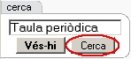
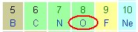
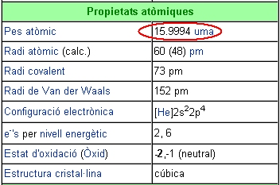
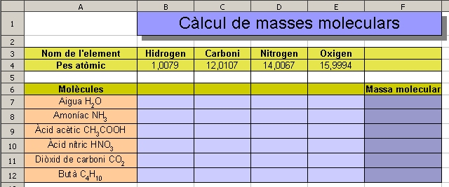
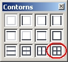
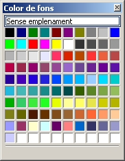
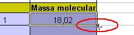

UF4. Fulls de càlcul
Mòdul 1 - Exercici 4
Càlculs de masses moleculars
Per defecte el full de càlcul mostra tres fulls (Full1, Full2 i Full3). Evidentment es poden afegir més fulls al llibre (fitxer M1). Havent fet les tres primeres pràctiques del mòdul 1, ara caldrà afegir un nou full per fer la quarta pràctica del mòdul 1 (fitxer M1).
Per inserir un full nou, només cal fer clic en Insereix | Full | Fer clic al botó d'opció de “Després del full actual” | Escriure el nom del nou full “Càlculs de masses moleculars” i finalment fer clic en d'acord.
Per inserir un full nou, només cal fer clic en Insereix | Full | Fer clic al botó d'opció de “Després del full actual” | Escriure el nom del nou full “Càlculs de masses moleculars” i finalment fer clic en d'acord.
Recolliu la informació
- Cerqueu a la Viquipèdia La taula periòdica dels elements
- Obriu el Navegador Mozilla Firefox i escriviu a la barra d'adreces http://ca.wikipedia.org
- Al bloc cerca

escriviu Taula periòdica i premeu el botó Cerca
- Anoteu les masses atòmiques de l'Oxigen, Carboni, Nitrogen i Hidrogen. Per obtenir les seves dades, només caldrà fer clic sobre el seu símbol químic en la Taula periòdica

Prepareu l'activitat
- Activeu l'OpenOffice.org Calc i, en el Full 1, afegiu les dades que veieu a continuació. Els valors dels pesos atòmics seran els obtinguts en la consulta que heu realitzat en la Viquipèdia. Recordeu que els nombres decimals, en el Calc, s'han d'escriure amb una coma decimal i no un punt, ja que en aquest cas, Calc entendria que introduïu un text.

Prepareu, primer, l'estructura dels textos i la seva disposició seguint l'esquema que observeu a la imatge. La presentació del full la podeu aconseguir amb les eines de format del Calc:- Formatat dels textos: Seleccioneu la o les caselles a formatar i feu servir les eines Negreta, Alineació centrada i Mida de la lletra. Quant a l'escriptura de les fórmules químiques, millor escriure-les de la forma CH3COOH i, abans de finalitzar l'entrada, en la Línia d'entrada de la Barra de fórmules, seleccioneu els números amb el ratolí, demaneu Format | Caràcter | Posició del tipus de lletra, activeu Posició / Subíndex i Establiu la Mida de lletra relativa al 66%. Premeu D'acord i finalitzeu l'entrada de la fórmula amb Retorn.
Per aconseguir que les cel·les dels pesos atòmics mostrin més de dos decimals, demaneu Format | Cel·les | Números i augmenteu el valor de Nombre de decimals al valor desitjat. Feu servir els dos controls en forma de petita fletxa per augmentar o disminuir el valor. - Fusionar les cel·les del títol: Seleccionar-les i demanar Format | Fusiona les cel·les (o bé amb l'eina )
- Dibuixar les vores de les cel·les: Seleccionar-les, desplegar l'eina Vores i escollir Vora exterior i línies interiors
 - Donar color a les cel·les: Seleccionar-les, desplegar l'eina Color de fons i escollir el color desitjat, de la paleta de colors que mostrarà el Calc. L'opció Sense emplenament serveix per restablir el color de fons original d'una cel·la o de les cel·les seleccionades

Calculeu la massa molecular del primer compost
- Escriviu, primer, la quantitat d'àtoms que formen l'aigua. En aquest cas, escriviu un 2 a la cel·la B7 (2 àtoms d'Hidrogen) i un 1 a la cel·la E7 (1 àtom d'oxigen).
Amb la fórmula =B$4*B7+C$4*C7+D$4*D7+E$4*E7, obtindreu el mateix resultat, però així, la fórmula es podrà copiar a la resta de cel·les: de F8 a F12
Calculeu la resta de masses moleculars
- Introduïu, per a cada compost químic, la quantitat d'àtoms d'Hidrogen, de Carboni, de Nitrogen i d'Oxigen que formen la seva molècula. Evidentment, deixeu en blanc les cel·les dels elements químics que no en formin part del compost.
- Canvieu la fórmula de la cel·la F7 per =B$4*B7+C$4*C7+D$4*D7+E$4*E7. Les referències que porten el signe $ davant del número de fila ens asseguraran que, en copiar la fórmula en direcció vertical, el número de fila romangui invariable. D'aquesta manera només caldrà que escriviu la fórmula una sola vegada i l'aprofiteu per copiar-la en la resta de cel·les on heu de fer els càlculs. Tot seguit veureu una forma molt còmoda de copiar la fórmula a la resta de cel·les.
- Feu clic sobre la cel·la F7 per seleccionar-la.
- Observeu la marca, en forma d'un quadrat petit, que apareix a la part inferior dreta de la cel·la. Situeu el punter del ratolí sobre aquest senyal. Observeu el canvi de la forma del punter que es transformarà en una creu
 - Feu clic amb el botó d'acció del ratolí i arrossegueu-lo, cap avall, fins a arribar a la cel·la F12.
- Deixeu anar el botó del ratolí i ja tindreu copiades totes les fórmules. A més, Calc les haurà actualitzat adequant la fórmula a cada una de les files. Només haurà deixat invariables les referències on apareixia el símbol $.
Deseu el resultat
- Completeu la feina destacant amb negreta les cel·les corresponents a les fórmules dels compostos i les corresponents als càlculs de les masses moleculars.
- Comprovar que l'activitat funcioni correctament.
- Desar el fitxer

|
|

|
|
|